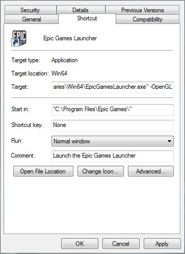

Troubleshooting Launcher Problems RU
Contents
-
1
Устранение проблем ланчера Epic Games
- 1.1 Рекомендуемые системные требования
- 1.2 Я не могу войти в ланчер используя свою учётную запись Epic Games
- 1.3 Я не могу установить ланчер для Windows
- 1.4 При попытке запуска ланчер зависает на окне с надписью "Please Wait".
- 1.5 Ланчер не запускается или падает при запуске
- 1.6 Ланчер не может загрузить контент
- 1.7 Если ничего не помогло – сбор необходимых данных
- 1.8 Советы
Устранение проблем ланчера Epic Games
Ланчер Unreal Engine является единым приложением для загрузки и запуска бинарных версий Unreal Engine 4 (вместо компиляции исходного кода движка с GitHub), загрузки дополнительного контента, просмотра новостей и записей в блоге.
Если у вас возникли проблемы с ланчером, ознакомьтесь с этим руководством – в нём может быть решение имеющейся у вас проблемы. Если вы не нашли подходящего решения, перейдите на страницу http://help.epicgames.com/ и нажмите кнопку «Email Us», расположенную в разделе «Contact Us». Заполняя форму обратной связи постарайтесь указать как можно больше информации о вашей проблеме.
Рекомендуемые системные требования
ОС: 64-битная версия Windows 7, 8, 8.1, 10; на Mac – OS X 10.9.2 или более поздняя
Свободное место на жёстком диске: Для установки ланчера рекомендуется ~1ГБ свободного места. Для установки проектов, редакторов игр и контента из Магазина потребуется больше свободного места.
Видеокарта: Любая видеокарта, совместимая с DirectX 11 или DirectX 12
Процессор: Четырёхъядерный процессор Intel или AMD
Я не могу войти в ланчер используя свою учётную запись Epic Games
Возможно что ваша учётная запись используется на нескольких компьютерах одновременно. Одновременный вход возможен не более чем на 5 компьютерах. Количество доступных входов может быть снижено до 1, если вы войдёте в учётную запись после большого количества попыток.
Обратите внимание, что среди этих 5 одновременных входов также учитывается вход на форум Unreal Engine.
Я не могу установить ланчер для Windows
Если вы не можете скачать и запустить инсталлятор, попробуйте сделать следующее:
- убедитесь, что установщик запущен с привилегиями администратора;
- убедитесь, что у вас есть права на чтение/запись в выбранную папку;
- убедитесь, что у вас установлены все сервис-паки, обновления ОС и самые последние версии драйверов.
Если ничто из перечисленного не помогло, то вам понадобится получить логи инсталлятора. Для этого:
- скопируйте msi-файл в корень диска C;
- нажмите сочетание Win+R и в появишемся окне введите следующую команду:
- msiexec /i C:\EpicGamesLauncherInstaller.msi /L*V C:\EpicGamesInstallerLog.txt (Если имя msi-файла отличается от «EpicGamesLauncherInstaller.msi», исправьте его в этой строке, чтобы имена совпадали)
Когда вы получите логи, создайте пост на AnswerHub и прикрепите логи к вашему посту.
При попытке запуска ланчер зависает на окне с надписью "Please Wait".
Если эта проблема возникает при попытке входа в вашу учётную запись, выполните следующие шаги:
- убедитесь, что вы не используете прокси-сервер (это можно сделать с помощью этого сайта) и что у вас не заблокирован адрес epicgames.com. Если вы используете прокси-сервер, добавьте разрешение для адреса epicgames.com и его поддоменов (или попросите ваш IT-отдел сделать это). Если ваш IT-отдел предпочитает разрешать конкретные поддомены, то вы найдёте полный перечень в конце этого раздела.
- убедитесь, что у вас открыты все необходимые порты 80 (http), 443 (https), и 5222 ;
- попробуйте другой DNS-сервер (например на OpenDNS или GoogleDNS );
- добавьте в командную строку параметр «-http=wininet» (только для Windows):
-
- щёлкните правой кнопкой мыши на ярлыке ланчера и выберите пункт «Свойства»;
- в конце поля «Объект» добавьте « -http=wininet» без кавычек и убедитесь, что перед дефисом есть пробел. Оно должно выглядеть вот так (см. поле «Target»):

-
- примените изменения и перезапустите ланчер.
unrealengine.com
unrealtournament.com
fortnite.com
account-public-service-prod03.ol.epicgames.com
catalog-public-service-prod06.ol.epicgames.com
eulatracking-public-service-prod06.ol.epicgames.com
entitlement-public-service-prod08.ol.epicgames.com
orderprocessor-public-service-ecomprod01.ol.epicgames.com
friends-public-service-prod06.ol.epicgames.com
persona-public-service-prod06.ol.epicgames.com
lightswitch-public-service-prod06.ol.epicgames.com
ut-public-service-prod10.ol.epicgames.com
launcher-public-service-prod06.ol.epicgames.com
xmpp-service-prod.ol.epicgames.com
https://download.epicgames.com
https://cdn1.epicgames.com
http://et2.epicgames.com
https://launcher-website-prod07.ol.epicgames.com
Ланчер не запускается или падает при запуске
Если при запуске ланчера ничего не происходит попробуйте следующее:
- убедитесь, что ланчер не был запущен раньше;
- проверьте Диспетчер задач на случай если ланчер не закрылся после предыдущей сессии;
- убедитесь, что у вас установлена самая последняя версия драйвера для видеокарты;
- если вы используете совместимую с DirectX 11 интегрированную видеокарту или видеокарту ноутбука попробуйте использовать параметр командной строки «-OpenGL»:
-
- щёлкните правой кнопкой мыши на ярлыке ланчера и выберите пункт «Свойства»;
- в конце поля «Объект» добавьте « -OpenGL» без кавычек и убедитесь, что перед дефисом есть пробел. Оно должно выглядеть вот так (см. поле «Target»):

-
- примените изменения и перезапустите ланчер.
Ланчер не может загрузить контент
Если у вас не загружается или не отображается контент, попробуйте следующее:
- закройте и перезапустите ланчер и/или ваш компьютер, но прежде чем это делать, подождите несколько минут (это помогает чаще всего!);
- убедитесь, что вы не используете прокси-сервер (это можно сделать с помощью этого сайта) и что у вас не заблокирован адрес epicgames.com. Если вы используете прокси-сервер, добавьте разрешение для адреса epicgames.com и его поддоменов (или попросите ваш IT-отдел сделать это);
- если вы используете брандмауэр, убедитесь, что в нём добавлены исключения для адреса epicgames.com и его поддоменов (или попросите ваш IT-отдел сделать это);
- попробуйте сменить DNS-сервер (например на OpenDNS или GoogleDNS );
- если контент из магазина завис на этапе синхронизации, пожалуйста сообщите нам на форуме Магазина.
Если ничего не помогло – сбор необходимых данных
Если ничего из вышеперечисленного не помогло вашу решить имеющуюсмя проблему или она здесь не описана, пожалуйста попробуйте посмотреть не сообщил кто-нибудь о подобной проблеме на AnswerHub . Если нет, то создайте новый пост, но не забудьте прикрепить к нему файл DxDiag и журнала отладки ланчера!
- Создание файла DxDiag:
-
На Windows:
- Нажмите на клавиатуре сочетание Win+R.
- В открывшемся окне введите «dxdiag» и нажмите OK.
- Появится окно программы диагностики DirectX c индикатором выполнения в нижнем левом углу.
- Когда индикатор исчезнет, нажмите кнопку «Сохранить все сведения...».
- Сохраните текстовый файл на рабочий стол или куда-нибудь ещё, где вы его легко найдёте.
-
На Mac:
- Щёлкните на меню Apple.
- Выберите пункт “Об этом Mac”.
- Скопируйте информацию включая название ОС и её версию.
После этого прикрепите DxDiag или укажите информацию о системе вашего Mac в посте на AnswerHub!
- Журнал отладки ланчера:
-
В самом ланчере:
- В верхнем правом углу ланчера щёлкните на значке шестерёнки.
- В открывшемся меню выберите «Включить ведение журнала отладки», затем «Включить сейчас». Если проблема возникает при запуске или входе, выберите «Включить ведение журнала отладки», затем «Перезапустить».
- Воспроизведите проблему при включённом ведении журнала отладки.
- После успешного воспроизведения проблемы снова откройте меню настроек ланчера (значок шестерёнки) и выберите пункт «Показать журналы приложения запуска»
- Заархивируйте все логи в этой папке в zip-файл и прикрепите его к вашему посту к AnswerHub.
- В ланчере снова откройте меню настроек и выберите пункт «Отключить ведение журнала отладки» или закройте ланчер.
- Если вы не можете включить сборку отладочных данных в самом ланчере или вы не можете включить ведение журнала отладки, вы можете попробовать сделать это с помощью параметра командной строки:
- Вне ланчера:
Щёлкните правой кнопкой мыши на ярлыке ланчера и выберите пункт «Свойства».
-
- В конце поля «Объект» добавьте « -debuglogging» без кавычек и убедитесь, что перед дефисом есть пробел. Оно должно выглядеть вот так (см. поле «Target»):

-
- После того как вы получили журнал отладки удалите параметр из поля «Объект» в свойствах ярлыка.
- Где найти файлы журналов отладки:
- Необходимые файлы находятся в следующей папке:
- На Windows: "C:\Users\"Username"\AppData\Local\EpicGamesLauncher\Saved\Logs"
- на Mac OS: "~/Library/Logs/Unreal Engine/EpicGamesLauncher/"
- Заархивируйте всё содержимое папки и прикрепите его к вашему посту на AnswerHub.
Советы
Как создать символьную ссылку
Windows:
Если у вас не хватает места на нужном диске, то файловая система NTFS в Windows поддерживает символьные ссылки. Для переадресации папок вы можете воспользоваться командой "mklink /D [ссылка] [папка для переадресации]".
Две самые частые причины проблем с нехваткой места - 30+ ГБ контента примеров и наличие двух копий движка при переходе с версии на версию (например 4.7 занимает 16+ ГБ без учёта папки DerivedDataCache).
В командной строке запущенной с администраторскими привилегиями вводите следующие команды. [ В Windows 8.1, щёлкните правой кнопкой мыши в нижнем левом углу экрана и выберите «Командная строка (администратор)» ]
- cd "\Program Files\Epic Games\Launcher"
- explorer . (пробел и точка после команды необходимы — это откроет Проводник в текущей папке)
- Перенесите с помощью проводника папки PatchStaging и VaultCache в новое место, перед этим убедитесь что ланчер не запущен. (Для дальнейших пунктов будем считать что папки были скопированы в корень диска E: )
- mklink /d VaultCache E:\VaultCache
- mklink /d PatchStaging E:\PatchStaging
Вы должны увидеть примерно такую картину:
Directory of C:\Program Files\Epic Games\Launcher 02.02.2015 19:24 <DIR> Backup 11.12.2014 01:19 <DIR> Engine 12.12.2015 19:28 <SYMLINKD> PatchStaging [E:\PatchStaging] 07.07.2015 02:31 <SYMLINKD> VaultCache [E:\VaultCache]
Обратите внимание на D в конце «SYMLINKD».
Команду «mklink» так же можно использовать для переноса отдельных папок движка или папки Unreal Projects, или например папки Android SDK.
Кстати, системная папка «Документы» тоже нестандартная – в её свойствах есть вкладка «Расположение», с помощью которой можно перенести папку на диск, где есть больше места. При этом некоторые системные папки Windows трогать не стоит.
MAC:
На Mac папку установки можно перенести на внешний диск используя символическую ссылку (SymLink). Для этого необходимо перенести папку /Users/Shared/UnrealEngine на внешний диск, а затем создать символическую ссылку на новую папку в старой. Для этого вам необходимо выполнить следующие шаги:
- Сделайте резервную копию папки UnrealEngine, которая находится в папке /Users/Shared
- Перенесите папку UnrealEngine на диск, на который вы будете устанавливать движок. Это можно сделать введя в терминале следующую команду (без кавычек): «Sudo mv /Users/Shared/UnrealEngine /Destination/Location/» (Примечание: путь к переносимой папке и путь к месту куда она переносится разделены пробелом)
- Введите пароль администратора, когда система его запросит
- Создайте символическую ссылку в старой папке UnrealEngine, чтобы она указывала на новое местоположение папки: "ln -s /Destination/Location/ /Users/Shared/UnrealEngine"